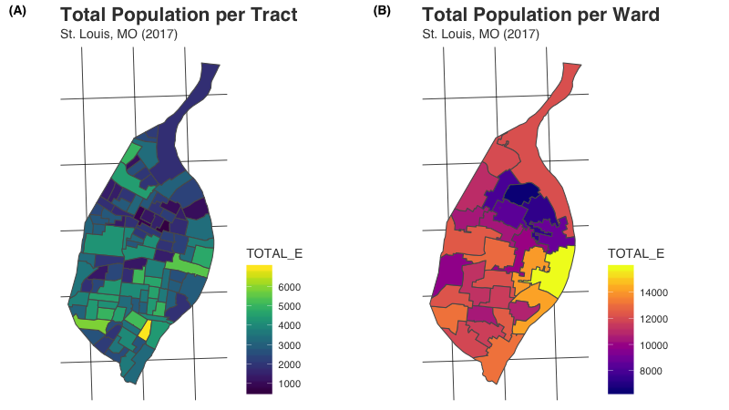

Areal interpolation is the process making estimates from a source set of polygons to an overlapping but incongruent set of target polygons. This is required if, for example, a researcher wants to derive population estimates for neighborhoods in a U.S. city from the Census Bureau’s census tracts. Neighborhoods do not typically align with census tract boundaries, and areal interpolation can be used to produce estimates in this situation.
As helpful as this may be, areal interpolation is not widely used. Many neighborhood researchers use census tracts, census block groups, or even zip codes as proxies for neighborhoods instead of interpolating values from these underlying sources into the actual neighborhoods. A key reason many researchers do not take this second step is that desktop GIS applications have not historically offered built-in tools for completing these calculations. Thus researchers wishing to use areal interpolation must “reinvent the wheel” (Qiu et al. 2012) when it comes to developing processes for carrying out areal interpolation.
In R, the sf package does offer a basic interface for areal weighted interpolation (st_interpolate_aw). While this functionality is welcome and useful, its implementation requires extensive data cleaning to carry out multiple interpolations (or the use of a tool like purrr). The process is also a “black box” - the interpolations are produced without a means to dis-aggregate the process into its constituent elements.
areal is designed as an alternative to this approach. For its initial release, the package offers a specific approach to interpolation known as areal weighted interpolation with several distinct features. Iteration is built-in and does not require using the apply family of functions from base or tools from purrr. Users have multiple choices available both in terms of how interpolations are calculated and how output is structured. The key function, aw_interpolate() is pipe-able, meaning it fits into existing tidyverse workflows. Helper functions are provided to validate data and make decisions about which areal weight to implement. And finally, the areal weighted interpolation process can be dis-aggregated by applying the necessary functions in sequence.
What results from areal interpolation is mapped below. We begin with a common unit of spatial data aggregation - the census tract. Total population per tract is mapped on the left in panel A. Using the areal package, we estimate population counts for wards in St. Louis from those census tract values. These estimated values are mapped on the right in panel B.

We recommend that users install sf before proceeding with the installation of areal. Windows users should be able to install sf without significant issues, but macOS and Linux users will need to install several open source spatial libraries to get sf itself up and running. The easiest approach for macOS users is to install the GDAL 2.0 Complete framework from Kyng Chaos.
For Linux users, steps will vary based on the flavor being used. Our configuration file for Travis CI and its associated bash script should be useful in determining the necessary components to install. Linux users will need to make sure the dependency lwgeom is also installed correctly.
Once sf is installed, the easiest way to get areal is to install it from CRAN:
install.packages("areal")Alternatively, the development version of areal can be accessed from GitHub with remotes:
# install.packages("remotes")
remotes::install_github("slu-openGIS/areal")Two function prefixes are used in areal to allow users to take advantage of RStudio’s auto complete functionality:
ar_ - data and functions that are used for multiple interpolation methodsaw_ - functions that are used specifically for areal weighted interpolationThe package contains four overlapping data sets that can be used for practice:
ar_stl_race (2017 ACS demographic counts at the census tract level; n = 106)ar_stl_asthma (2017 asthma rates at the census tract level; n = 106)ar_stl_wards (the 2010 political subdivisions in St. Louis; n = 28).ar_stl_wardsClipped (the 2010 political subdivisions in St. Louis clipped to the Mississippi River shoreline; n = 28).areal assumes that all data are available as sf objects. The st_read() function is useful for importing data stored in a variety of formats into sf objects. Creating these objects is a pre-requisite to passing the validation steps before interpolations are completed.
It is also recommended that all data are stored using a projected coordinate system as opposed to a geographic coordinate system like NAD 1983 or WGS 1984. There are many projected coordinate systems to choose from, but the key is that all of your data is projected using the same system. Here too the sf package has built-in functionality - the st_transform() function can be used for data re-projection.
Finally, we strongly suggest that you clean out unnecessary columns from your data prior to projection. sf objects can be cleaned using tidyverse tools from dplyr, which makes it easy to select() the columns and filter() the observations you want to focus on for interpolation. Columns can also be easily renamed using rename().
Once data have been converted to sf objects, re-projected into the same planar coordinate systems, and cleaned, they are ready for interpolation!
The data preparation process is described in greater detail in a dedicated vignette.
Areal weighted interpolation makes a single, albeit significant, assumption about your data - that populations are evenly distributed within the source data. Imagine you have a census tract with 3,000 residents. Areal weighted interpolation will assume that these 3,000 residents are evenly spread out within that tract. This may not matter in some tracts, but in tracts with large parks or dense housing developments alongside commercial buildings, this assumption is not likely to hold.
The primary means for conducting interpolations, and possibly the only function you may need from areal, is the aw_interpolate() function:
## load dependencies
library(areal)
## interpolate values
aw_interpolate(ar_stl_wards, tid = WARD, source = ar_stl_race, sid = "GEOID",
weight = "sum", output = "sf", extensive = "TOTAL_E")The function is capable of both spatially extensive and intensive interpolations, and can use two different strategies for calculating areal weights for extensive interpolations. It can also produce output as either tibble or sf objects. These options are all documented in both the function documentation (use ?aw_interpolate) as well as in a dedicated vignette.
R itself, welcome! Hadley Wickham’s R for Data Science is an excellent way to get started with data manipulation in the tidyverse, which areal is designed to integrate seamlessly with.R, we strongly encourage you check out the excellent new Geocomputation in R by Robin Lovelace, Jakub Nowosad, and Jannes Muenchow.areal, you are encouraged to use the RStudio Community forums. Please create a reprex before posting. Feel free to tag Chris (@chris.prener) in any posts about areal.reprex and then open an issue on GitHub.We are planning to experiment with at least three additional techniques for areal interpolation for possible inclusion into the package. These include:
We do not have a timeline for these experiments, though we are planning to begin experimenting with the pycnophylactic method in the coming months. We will be keeping the issues (linked to above) updated with progress. If you are interested in bringing these techniques to R, please feel free to contribute to the development of areal. The best place to start is bt checking in on our GitHub issues for each technique to see what help is needed!
If you have other features or suggestions you want to see, please open an issue on GitHub (and ideally created a reprex to go with it!). Please note that this project is released with a Contributor Code of Conduct. By participating in this project you agree to abide by its terms.